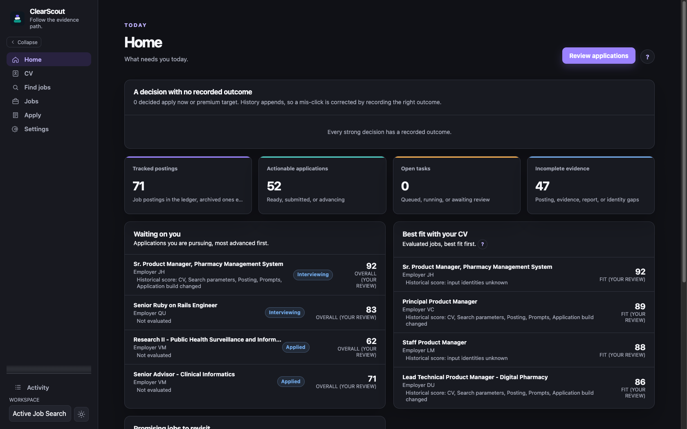
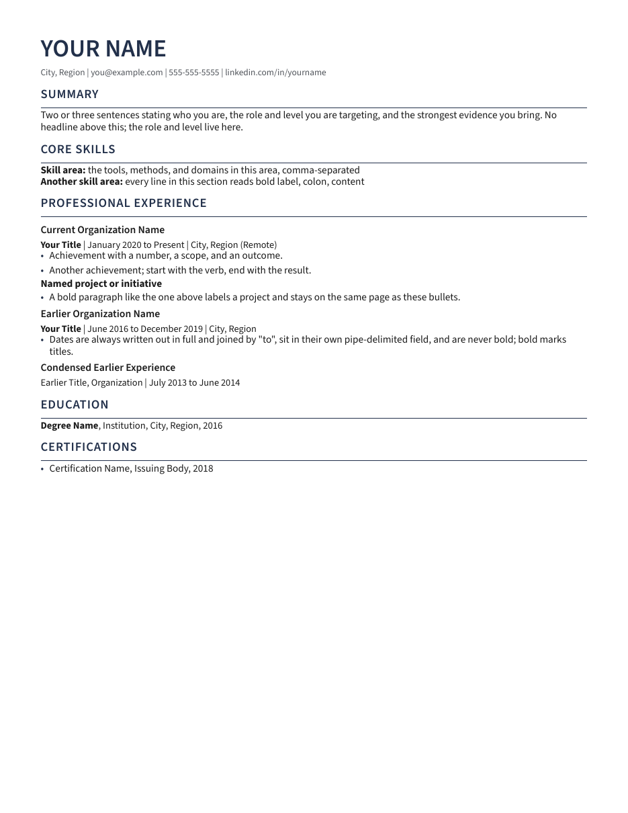

PYTHON | APACHE-2.0 | ALPHA
ClearScout
Find the roles your record already fits. Free scans of 47 kinds of job board, and drafts where every claim cites your own CV.
PharmD. Clinical and health-data background. Self-taught software.
Local, open-source tools for a job search, built so every claim can be checked against its source.

Find the roles your record already fits. Free scans of 47 kinds of job board, and drafts where every claim cites your own CV.

Render polished, verified resumes and CVs from portable Markdown, then reopen each file and check it.